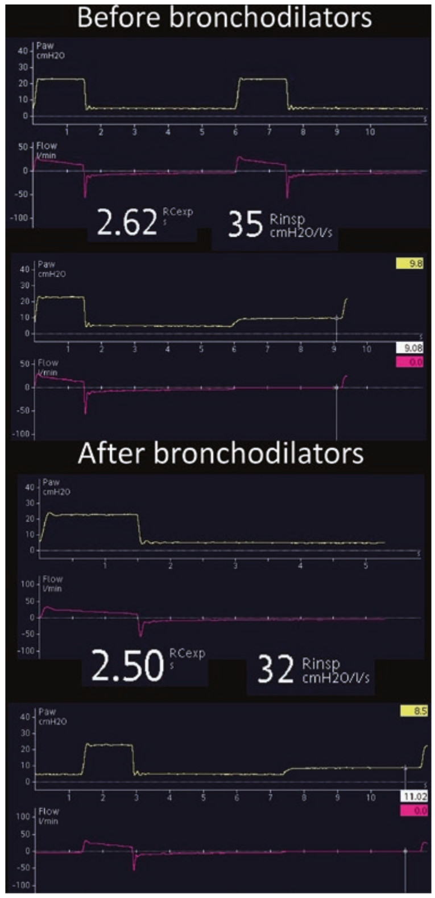

برونکودیلاتور در بیماران COPD و آسم حاد برای کاهش مقاومت راه هوائی بکار میرود. پاسخ مثبت به این درمان همان کاهش مقاومت راه هوائی است که بصورت افزایش شدت جریان بازدمی، کاهش ثابت زمانی بازدم، و کاهش اتوپیپ نشان داده میشود.
